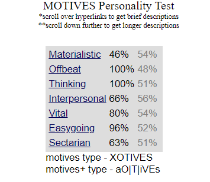

Traits:
Strongest Trait (Perseverance):
My strongest trait, perseverance, plays a crucial role in my academic journey, allowing me to consistently push through challenging coursework and setbacks while maintaining a focused drive toward success. Here are some examples of how perseverance helped me throughout my academic so far:
- Overcoming Challenges: Perseverance has allowed me to push through difficult subjects, assignments, and concepts that others might give up on, ensuring that I found solutions and improved my understanding over time.
- Maintaining Long-Term Focus: With perseverance, I have stayed committed to my long-term academic goals, even when faced with distractions or moments of low motivation, ensuring steady progress toward my graduation.
- Recovering from Setbacks: Perseverance has helped me bounce back from academic failures and setbacks, like poor coursework results. It has helped to keep me motivated, learn from mistakes, and continue striving for improvement.
Trait (Stoicism):
Stoicism, as another personal trait, enables me to stay calm and composed under pressure, allowing me to handle academic stress with resilience and emotional control, keeping me focused on what I can control.
- Emotional Stability: Stoicism enables me to manage stress and anxiety, allowing me to stay calm and focused during high-pressure situations like exams and tight deadlines, which fosters productivity and clear thinking.
- Logical Decision-Making: Stoicism encourages a rational and composed approach to decision-making, helping me prioritise tasks, make thoughtful study plans, and efficiently manage my time to balance academic responsibilities.
- Consistency and Discipline: Stoicism fosters a disciplined approach to my studies by encouraging steady, consistent effort without being swayed by external distractions or emotional fluctuations, helping me maintain focus on my academic goals over time.
Primary Hobby (Jogging):
Jogging in the morning provides me with physical fitness and mental clarity, helping me manage stress and maintain focus throughout my academic day.
-
Physical Health: Jogging improves cardiovascular health, boosts endurance, and helps maintain a healthy weight, which can enhance overall well-being and energy levels, positively impacting my academic performance.
- Stress Relief: Regular jogging is a natural stress reliever, releasing endorphins that elevate mood and reduce anxiety, allowing for a clearer mind and better focus on my studies.
- Enhanced Concentration: The routine of jogging helps improve cognitive function and concentration, making it easier to absorb and retain information during study sessions and lectures.
Hobby (Reading):
My hobby of reading books allows me to explore new ideas and perspectives, enhancing my critical thinking and comprehension skills, which are essential for my academic success.
-
Knowledge Acquisition: Reading has expanded my knowledge base, exposing me to new concepts and ideas that can enhance my understanding of various subjects in my academic curriculum.
-
Improved Vocabulary and Writing Skills: Regular reading helps build vocabulary and comprehension skills, which can improve your writing and communication abilities in academic assignments.
-
Critical Thinking Development: Engaging with different genres and narratives fosters critical thinking and analytical skills, enabling you to approach academic challenges with a well-rounded perspective.
Back to top
A breakdown of a Hero:
My hero is fictional: he is Batman. One of my favorite quotes from him is: "A hero can be anyone. Even a man doing something as simple and reassuring as putting a coat around a young boy's shoulders to let him know that the world hadn't ended."
A breakdown of my Hero (Batman)
This Batman quotation highlights the idea that everyone may embody heroism via little deeds of kindness and that it is not just a trait belonging to exceptional people. Placing a coat around a little boy's shoulders serves as an example of how common heroics may have a big impact by offering consolation and security. The message emphasizes the value of hope, compassion, and ordinary bravery by implying that even the smallest deeds may serve as a reminder to others of the kindness that still permeates the world.
Why Batman?
Why Batman? While it may initially appear whimsical or unconventional, I invite you to consider the deeper significance of this choice. Here are some reasons:
-
Relatable Humanity: Unlike many superheroes, Batman is a human without superpowers, which makes him relatable to audiences. His struggles, vulnerabilities, and personal traumas resonate with many people, including myself. Having lost a parent, I find a personal connection to his character. Moreover, I draw motivation from the idea that an ordinary individual can make a significant impact on society by confronting adversities and "battling villains" in their way.
-
Dedication to Justice: Batman's unwavering commitment to fighting crime and protecting Gotham City reflects a profound sense of responsibility. He dedicates his life to improving his community, often at great personal sacrifice. I resonate deeply with this dedication, as I strive to take on similar responsibilities. I am committed not only to my self-improvement but also to enhancing my own "Gotham City"—which encompasses my friends, family, community, and country.
-
Empathy and Compassion: Despite his tough exterior, Batman often demonstrates empathy toward victims and even his adversaries. His desire to understand and help others, particularly those who have faced similar traumas, underscores his humanity. This resonates with me, as I believe that, despite societal expectations of masculinity and stoicism, men are fully capable of showing empathy. Acknowledging this has allowed me to embrace my own vulnerabilities, ultimately making me a better person, even in the face of my own adversities.
-
Inspiration to Others: Through his actions and values, Batman inspires others to stand up for what is right, highlighting that heroism can emerge from dedication, compassion, and resilience rather than extraordinary powers. I, too, aspire to create a meaningful legacy and be an inspiration to others, demonstrating that an ordinary individual can achieve great things and make a significant impact.
Back to top
Personality:

An analysis of my Personality Result
I do not believe that this personality test yields fully accurate results or should be used to judge someone’s character. Firstly, the test often repeats the same questions in different forms, which can lead to redundancy and potentially skewed answers. Additionally, a person's sense of morality or self-perception may influence how they respond to certain questions, rather than offering a true reflection of their personality. Furthermore, personality is nuanced and complex, and no test can fully capture the depth of an individual's traits, experiences, or values.
I agree with some results; however, I must respectfully disagree with characterising me as materialistic. Based on my perception of myself, others, and the deeper truths in life, I consider myself the opposite of materialistic.
Back to top